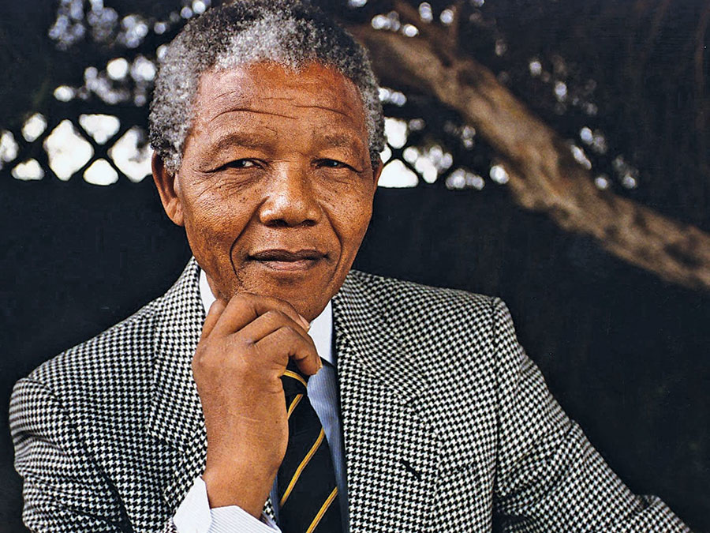

Né en 1918 au sein d’une famille bantoue cultivée et influente, Nelson Mandela entreprend des études de droit, chose rare pur un noir durant l’apartheid. Son désir de devenir avocat et les barrières qui lui sont mises pour atteindre cette fonction, le rendent conscient très vite de la ségrégation raciale en Afrique du Sud. Influencé par Walter Sisulu, il intègre l’African National Congress (ANC). Très vite, il devient l’un de ses principaux leaders, notamment avec la création de la Ligue de la jeunesse. Fondateur du premier cabinet d’avocats noirs d’Afrique du Sud, il mène des campagnes non-violentes jusqu’au massacre de Sharpeville, en 1960. Lors de cette journée du 21 mars 1960, des manifestations sont organisées pour protester contre le port obligatoire du passeport. Le drame se produit lorsque la police ouvre le feu. On dénombre plus de 60 morts.
Le gouvernement ayant interdit l’ANC à la suite du drame, Mandela décide de poursuivre la lutte clandestinement et de prendre les armes. Il met en place des actions de sabotages et de grève générale, afin d’entretenir la guérilla. Mais dès 1962, alors qu’il demande l’aide des pays voisins, il est arrêté puis condamné à la prison à vie en 1964 (son talent d’orateur lui évitera la peine de mort). Ses 27 ans d’incarcération à Robben Island, puis à Pollsmoor, n’ont jamais entaché sa popularité. Durant cette captivité il continuera d’entretenir des négociations avec le gouvernement, alors que la colère gronde dans le pays. Face à la pression et au changement du gouvernance du pays Mandela est finalement libéré.
A sa libération, il devient président de l’ANC puis négocie avec Frederik de Klerk sur le sort du pays. Afin d’honorer les efforts de Nelson Mandela et De Klerk pour mettre fin à l’apartheid, les deux hommes reçoivent le prix Nobel de la Paix en 1993. Puis, ils s’accordent sur un gouvernement multiracial et les premières élections présidentielles donnent le pouvoir à Mandela. Il devient le premier président noir de l’Afrique du Sud le 27 avril 1994. Il met alors en œuvre une politique de réconciliation difficile avant de laisser la place à Thabo Mbeki, en 1999. Après un seul mandat présidentiel, Nelson Mandela se retire de la vie politique. Mais il ne cesse jamais de soutenir l’ANC.
Durant les années 2000, il s’engage cette fois dans la lutte contre la pauvreté et le sida, véritable fléau, longtemps négligé en Afrique du Sud. Mais sa santé décline, après un cancer de la prostate, il souffre d’une infection pulmonaire chronique probablement liée à ses nombreuses d’emprisonnement. Son 90èmeanniversaire en 2008 est fêté comme une fête nationale. Nelson Mandela est décédé le 5 décembre 2013 à l’âge de 95 ans